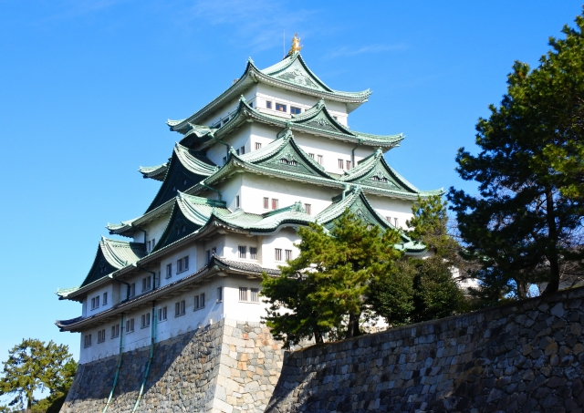
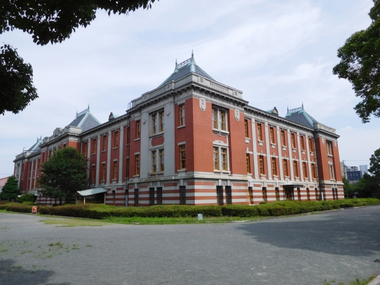
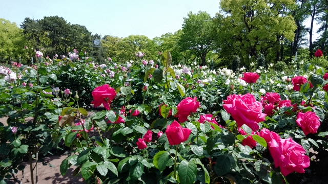

名古屋城は、日本三大名城の一つとして名高い歴史的名所です。 金のシャチホコが輝く天守閣と徳川家の権威を示す豪華絢爛な本丸御殿は、見逃せない観光スポット。
この建物は現在、図書館ではなく、市政資料や歴史的文書を展示・保存する資料館として利用されています。国の重要文化財にも指定されている、明治時代の代表的なネオ・バロック様式の建築物です。かつては裁判所として使われていました。
愛知県のバラの生産量は日本一です。名古屋市内や愛知県内にも、バラが有名なスポットが多数あり、早咲きのもので5月上旬から見頃を迎えます。
